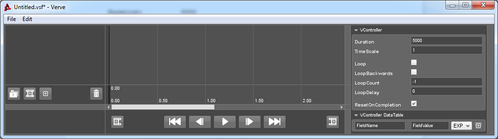
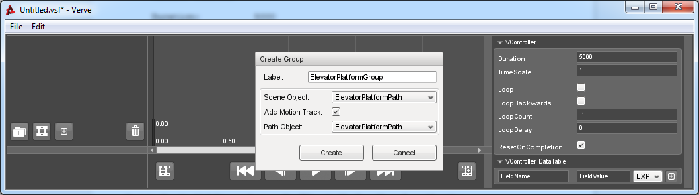
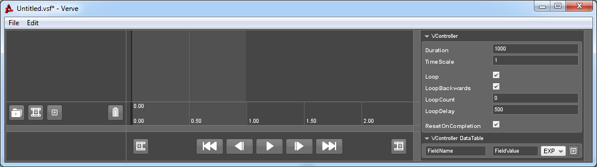
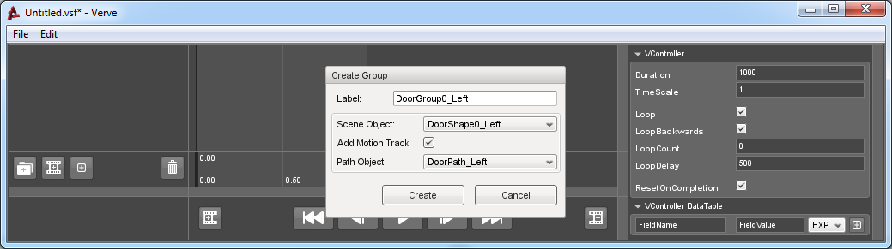
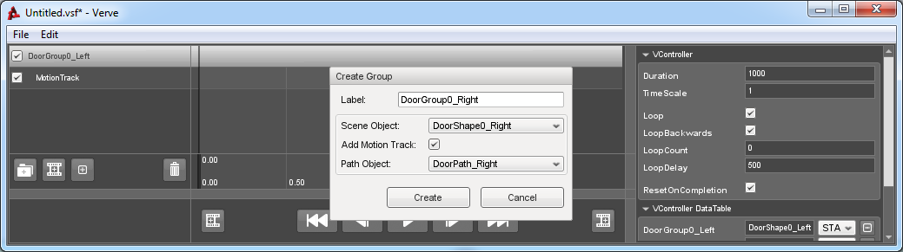
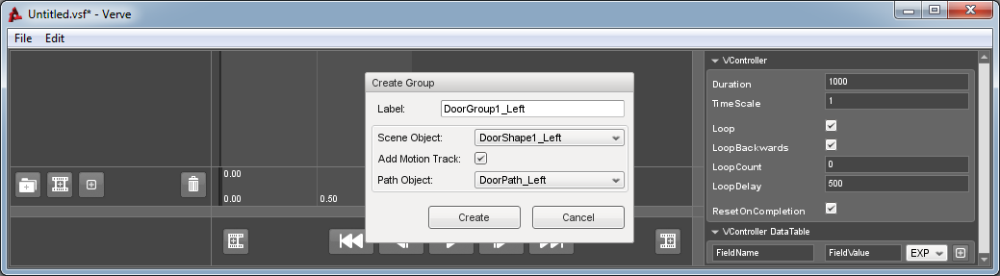
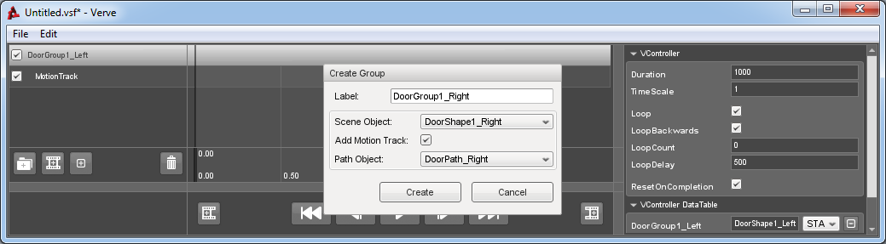
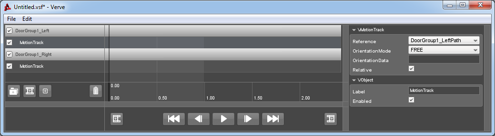

Tutorial : Motion
Objects: VMotionTrack, VMotionEvent
Moving and animating your objects at a whim are probably the most important aspects of a Cinematic Sequence. Verve gives you that control by allowing you to define Paths which objects can attach to.
The Verve Editor interfaces with referenced paths to aid in their creation and modification. Once you have a valid path reference, adding and deleting events in the VMotionTrack, will add or delete the corresponding node on the path. Moving the trigger time of an event will not alter the node, though it does alter the speed that an object moves over that path segment.
This tutorial will give you the knowledge to create some simple in-game motion sequences using the new Path feature in Verve. In addition to creating and editing paths and nodes, you will also see how this is interfaced with Verve's Sequence Editor giving you control over some of the finer details.
Two common uses for a Path will be covered here:
- Elevators
- Sliding Doors
How to Use:
Project
This tutorial requires you to use the "VerveTutorialBase" provided with your Verve Download. This project contains all of the necessary files and assets required to complete the tutorial. The concepts covered here are not localized to this project and should be applicable to your own work.
Mission Setup
Open the "missions/SimplePathTutorial.mis" file (provided in the files above) in Torque 3D's World Editor.
The key objects in this Mission you should observe before continuing are the Doors and the Elevator Platform:
- ElevatorPlatformShape
- DoorShape0_Left and DoorShape0_Right
- DoorShape1_Left and DoorShape1_Right
This Elevator is just a short example on how to make an object moving between two coordinates using Verve. The Shape object itself will attach to a single VPath object which defines the world coordinates which the shape interpolates between. Similarly, each of the two shapes making up a Door will have its own VPath to attach to.
Note: You cannot ride on the elevator, as this feature is not supported by Torque 3D or Verve. There are a number of resources on the GarageGames website which may or may not work with Torque 3D.
Elevator Platform
1. Create the Elevator Path.
The first step is to enter the "Path Editor" and create a new VPath Object To do this, you can click on the "Create new Path" button in the top right corner of the "Path Editor" window. You could also do this from the World Editor by navigating through the Library to the "Level" category and selecting "VPath".
Give the new Path the following properties:
| Path: | |
| Name: | ElevatorPlatformPath |
| Position: | 0, 22.25, -0.25 |
| Path Type: | LINEAR |
The Path Nodes will be created from keyframes Events in the Sequence Editor, so there is no need to add any Nodes at this stage.
2. Setup the Verve Sequence.
Launch the "Sequence Editor" and create a new sequence with the following properties:

Click on the "Add Group" button and select "Scene Object Group". Use the following properties:

3. Keyframe the Elevator Positions.
Make sure that the time cue on the Timeline in the editor is at the beginning of the sequence.
Select the "Motion Track" for "ElevatorPlatformGroup" and then hit the "Add Event" button. A new Path Node will have been created at the initial position of the Elevator.
Move the Time Cue in the Sequence Editor to the end of the sequence (time: 5000).
Go into the World Editor and move the "ElevatorPlatformShape" up 12 units:
| ElevatorPlatformShape: | |
| Position: | 0, 22.25, 11.75 |
Go back into the Sequence Editor and hit the "Add Event" button.
If you drag the Time Cue around, you should see that the Elevator moves up and down between the two Nodes that were created.
Save the Sequence as "ElevatorPlatform_Up+Down.vsf" to your Sequences folder.
First set of Sliding Doors
1. Create the two Door Paths.
Create two new VPath objects with the following properties:
| Path1: | |
| Name: | DoorPath_Left |
| Position: | -2, 12, 2 |
| Path Type: | LINEAR |
| Path2: | |
| Name: | DoorPath_Right |
| Position: | 2, 12, 2 |
| Path Type: | LINEAR |
2. Setup the Verve Sequence.
Create a new sequence in the Sequence Editor and give the Controller the following properties:
Create a new "Scene Object Group" using the following properties:

Repeat this for the right section of the door:

3. Keyframe the Door Positions.
Make sure that the time cue is at the beginning of the sequence.
Create a new Event on the "DoorGroup0_Left" Motion Track and repeat this for "DoorGroup0_Right". When a new Event on a Motion Track is created, a new Node will be added to the Path the Track references. This new Node will adopt the transform of the object the parent Group references.
In this case, the two Nodes that you have just created represent the position of the Door when it is in its "closed" state. The next step is to create two more Nodes representing the position of the Door when it is open.
Move the Time Cue in the Sequence Editor to the end of the sequence (time: 1000).
Enter the World Editor and move "DoorShape0_Left" 3.5 units to the left and "DoorShape0_Right" 3.5 units to the right:
| DoorShape0_Left: | |
| Position: | -5.5, 12, 2 |
| DoorShape0_Right: | |
| Position: | 5.5, 12, 2 |
Go back into the Sequence Editor and create a new Event on the Motion Tracks for both, "DoorGroup0_Left" and "DoorGroup0_Right".
If you drag the Time Cue, you should see that the Door opens and shuts as you would expect. Hit the Play button and watch it in action!
Save the Sequence as "DoorGroup0_OpenClose.vsf" to your Sequences folder.
Second Set of Sliding Doors
Since the first and second Doors only differ by their position, the Path objects you created for the first Door can also be used to interpolate the second. When an object is attached to a path using the "relative" flag, it will offset the pathed position by the object's initial position relative to the mount Node.
In simple terms, you can reuse existing Paths for similar objects.
1. Setup the Verve Sequence.
Create a new sequence in the Sequence Editor with the same properties as were in the first:

Create two more Scene Object Groups, using the following properties:


Select each of the two Motion Tracks and ensure that the "Relative" toggle is checked. Note that if your objects are mounted to the Path before this property has been set, they will "snap" to the position of the Path. If this happens, hit the "Reset" button and reposition your objects accordingly.

2. Keyframe the Door Positions.
Make sure that the time cue is at the beginning of the sequence.
Select the "Motion Track" for "DoorGroup1_Left" and then hit the "Add Event" button. Since we are reusing an existing Path, a new Path Node is not created, instead the Event will reference the first Node on the Path.
Do the same thing for "DoorGroup1_Right".
Move the Time Cue in the Sequence Editor to the end of the sequence (time: 1000).
Since we're using an existing Path, any Events that we create will attempt to reference existing Nodes. If you create more Events than there are Nodes on the Path, new Nodes will be created.
Select the Motion Track for "DoorGroup1_Left" and hit the "Add Event" button. Repeat this for "DoorGroup1_Right".
If you drag the Time Cue around, you should see that the Door opens and shuts in the same way that the first Door did.
Save the Sequence as "DoorGroup1_OpenClose.vsf" to your Sequences folder.